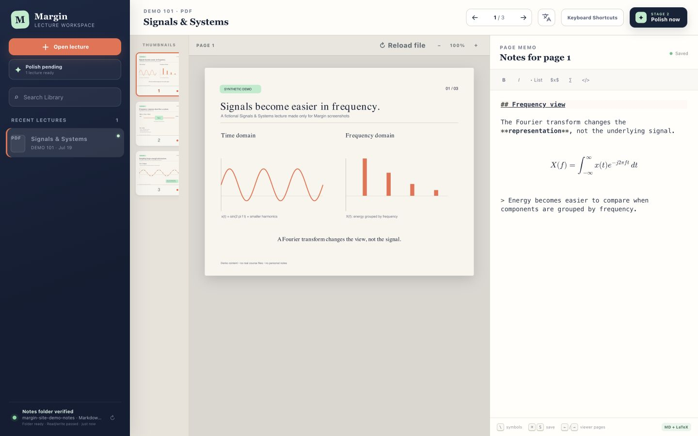
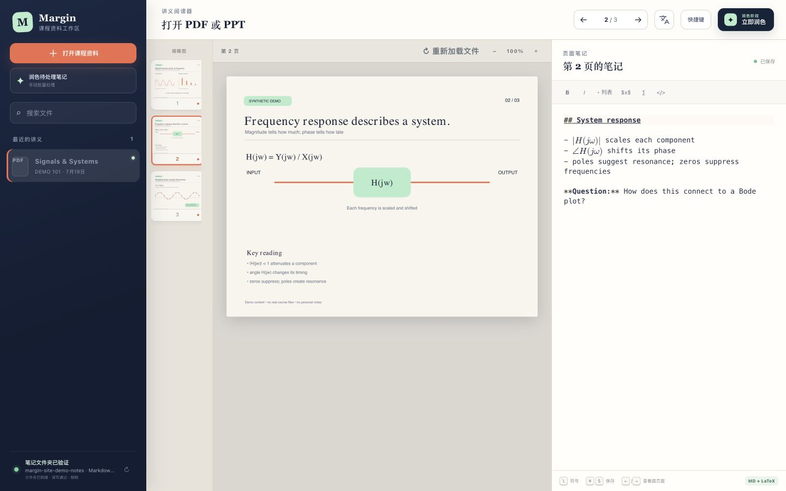

Open the lecture
Import a PDF or PowerPoint. Margin copies it byte-for-byte and prepares page previews locally.
PDF + PPTX · Markdown + LaTeX
Open a lecture, write a separate memo for each page, and turn the source plus your thinking into a polished note later—without changing the original file.
Local by design. This website never receives your lectures or notes.

One continuous study loop
Margin preserves the relationship between what the lecturer showed and what you understood in the moment.
Import a PDF or PowerPoint. Margin copies it byte-for-byte and prepares page previews locally.
Take Markdown and LaTeX memos per page. Use quick-LaTeX suggestions for symbols and notation; \omega is one example.
Combine the source and raw memos through your configured local AI tool—or copy a guarded prompt for your own system.
Built for actual coursework
Use an ordinary Markdown folder or route notes into an Obsidian vault. Raw notes, polished notes, and untouched sources remain linked without being merged into one fragile file.

No Margin cloud
The public site is static: there are no accounts, uploads, analytics, or hosted processing. The local app writes only to the folder or Obsidian vault you configure. Stage 2 communicates only with an AI tool you explicitly choose to run.
Margin v__MARGIN_VERSION__
Margin currently runs as a local Python server with a browser interface. Start with an ordinary folder, or connect an existing Obsidian vault.
Already installed and running? Open local Margin. If it does not open, start Margin locally, then check the setup instructions.
$ git clone https://github.com/IcyCrucifix/margin.git
$ cd margin
$ cp config.example.json config.json
$ python3 -m pip install -r requirements.txt
$ python3 -m content_reader.server --open